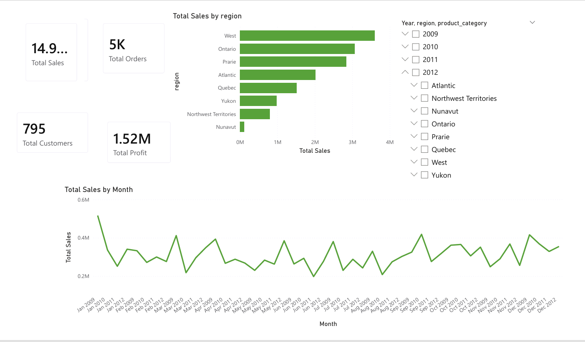

Data Analyst
|
I turn raw, messy data into dashboards and reports people actually use to make decisions built with Power BI, Python, SQL and Excel.
Based in Lahore, Pakistan · Open to freelance & internship work
Datasets Cleaned
0
Dashboards Built
0
Tools Mastered
0
01 · About
Hi! I'm Ali Qasim, a Computer Science undergraduate at UET Taxila specializing in Data Analysis, SQL, Python, Excel, and Power BI. I enjoy transforming raw, unorganized data into clean, interactive dashboards and meaningful business insights. My work includes data cleaning, preprocessing, SQL querying, exploratory data analysis (EDA), and building professional dashboards that make complex information easy to understand. I focus on accuracy, attention to detail, and creating solutions that help businesses and individuals make confident, data-driven decisions.
02 · Toolkit
Pandas & NumPy for data wrangling, aggregation, filtering, and feature creation.
SELECT, WHERE, GROUP BY, HAVING, JOINs, subqueries, CTEs, and window functions.
Pivot tables, formula-driven summaries, and quick-turnaround ad-hoc reporting.
Interactive dashboards, DAX measures, drill-throughs, and KPI storytelling.
Also comfortable with
03 · Projects

End-to-end retail sales analytics on 3 years of data: Python cleaning, SQL analysis (window functions & CTEs), and a 4-page Power BI dashboard with drill-through — surfacing real findings like the discount threshold that turns orders unprofitable.
Upload any CSV and get an instant, auto-generated interactive dashboard charts, filters and summary stats, no manual setup.
Five year financial analysis of Palo Alto Networks: liquidity, activity and cashflow ratios, delivered as a 19 slide investor style deck.
04 · Skills & Training
05 · Contact
Have a dataset that needs cleaning, or a dashboard you've been meaning to build? Send a message.